♦︎ DEFINICIONES ♦︎
- Hipertexto. Es un vinculo que enlaza una secuencia de texto digital con algun otro recurso de internet.
- UX. Es el proceso que utilizan los equipos de diseño para crear productos que brinden una experiencia de usuario.
- PROTOTIPADO. Es el proceso de crear un modelo inicial hasta llegar a su versión final.
- HTML. Se usa para crear y estructurar páginas web, utilizando etiquetas, imágenes, enlaces y otros recursos.
- CSS. Se usa para darle diseño al html.
- DIAGRAMA DE FLUJO. Muestra la secuencia de pasos, decisiones e interacciones de un proceso.
- DISPLAY Y TABLAS.
♦︎ SHORTCUTS MAC ♦︎
ATAJOS DE TECLADO:
- Fn + Q: Abrir Notes App.
- Cmd + Shift + 5: Captura de pantalla.
- Cmd + Tab: Alternar ventanas.
- Ctrl + Cmd + F: Dividir pantalla.
- Cmd + O: Abrir documento.
- Cmd + Shift + N: Nueva carpeta.
- Cmd + N: Ventana nueva.
- Cmd + H: Ocultar ventana principal.
- Ctrl + Cmd + N: Nueva carpeta de elementos seleccionados.
- Cmd + T: Ventana nueva.
♦︎ ETIQUETAS ♦︎
HTML Y CSS:
- P = Agregar texto
- img src = Agregar imágen
- ul = Enlistado
- h1 - h6 = Encabezados de títulos
- Style = Estilo/css para el html
- div class = Agregar un nombre a un párrafo
- a href = Botón
- Display: flex; (imagen a cada lado, editable en el css)
- /*Comentarios*/
- TH, TR Y TD: Creacion de tablas para información.
- "TR": Subdiviciones.
- "TH": Informacion que contiene los TR en la parte superior.
- "TD": Informacion en la parte inferior de los TH.
♦︎ GALERIA ♦︎
 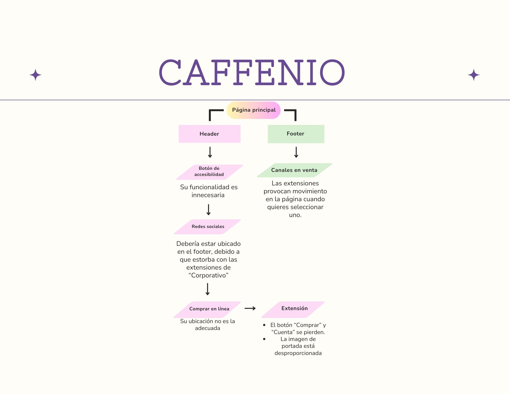
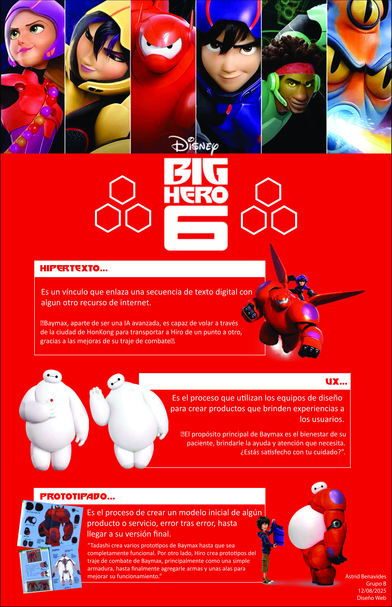
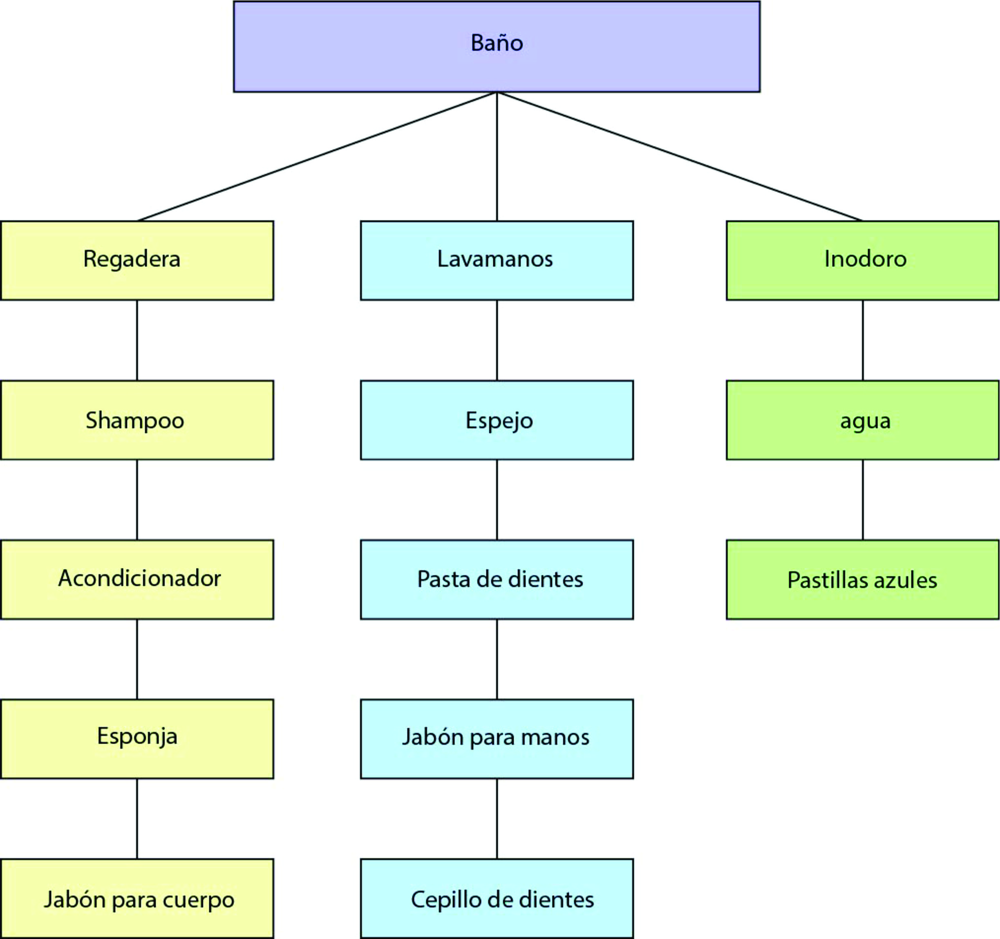
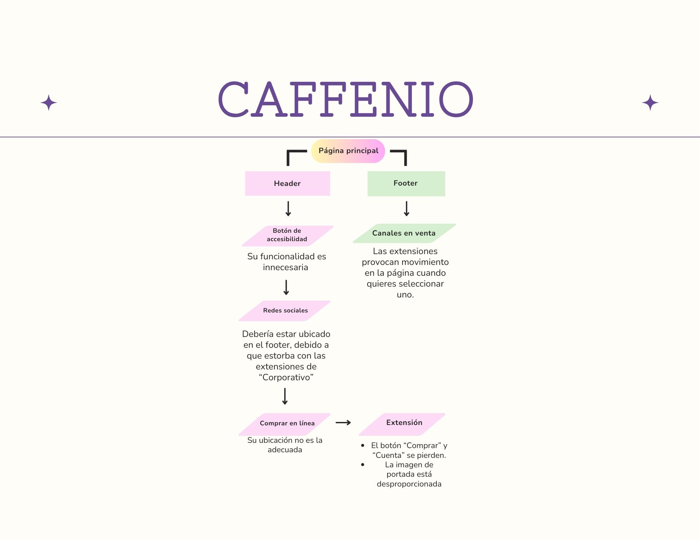
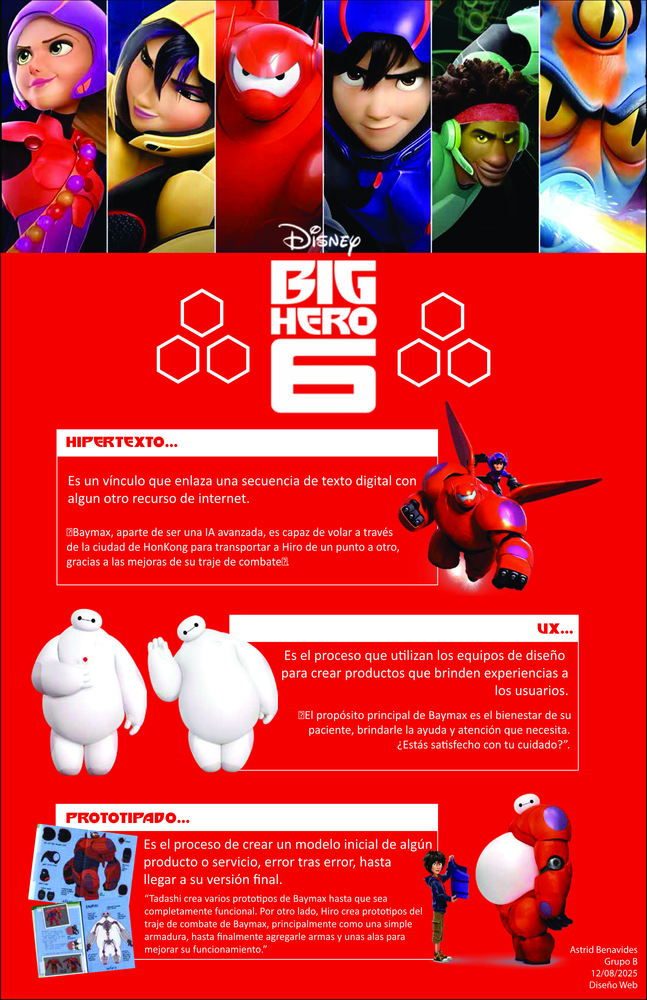
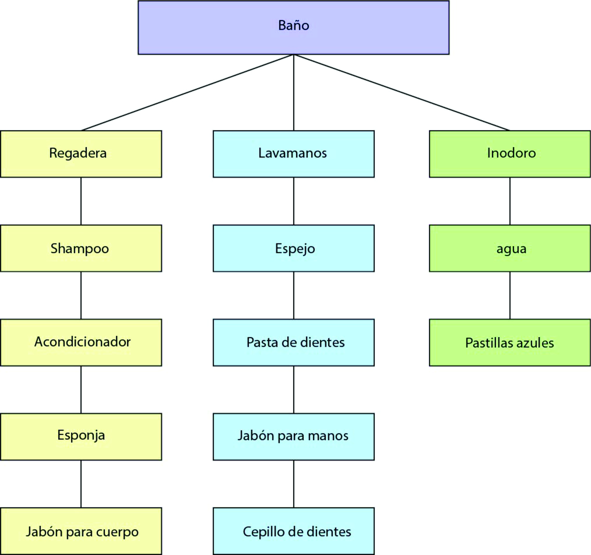


 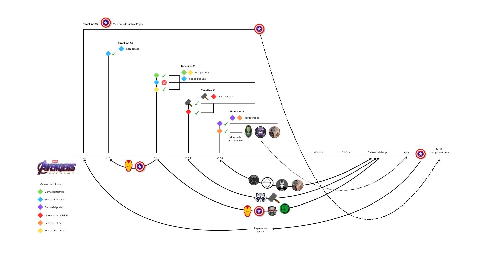
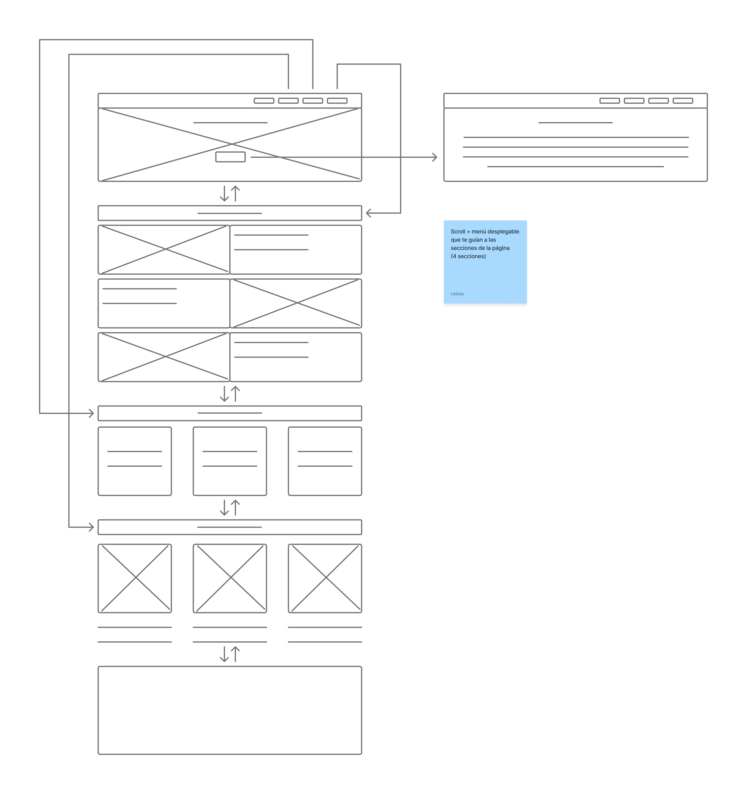
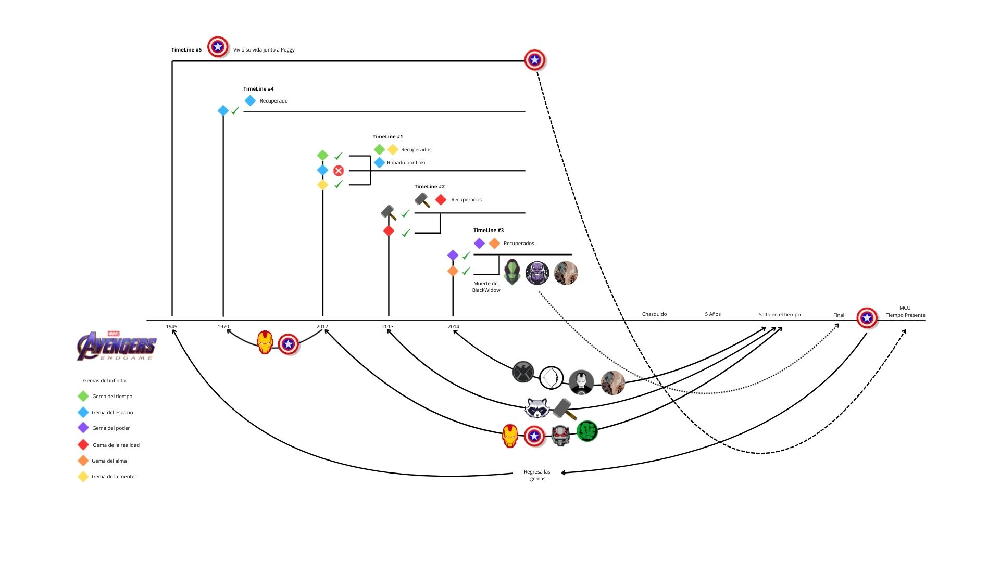
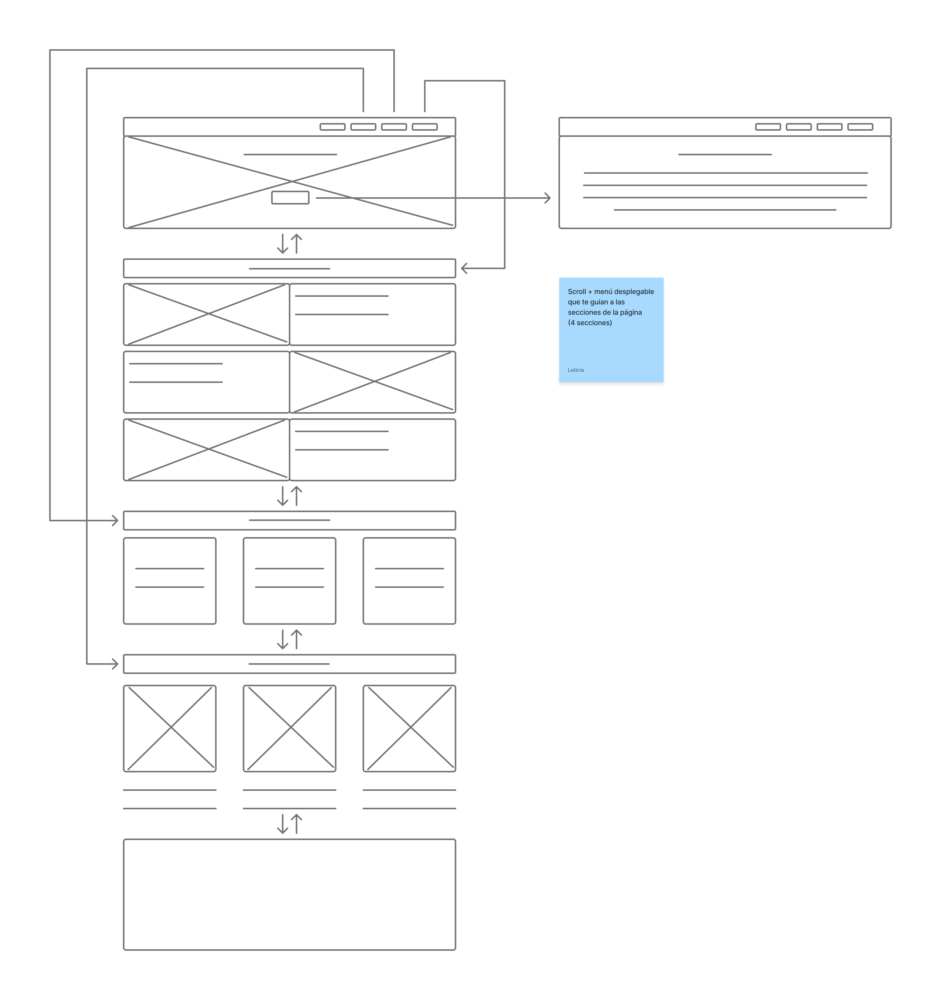


 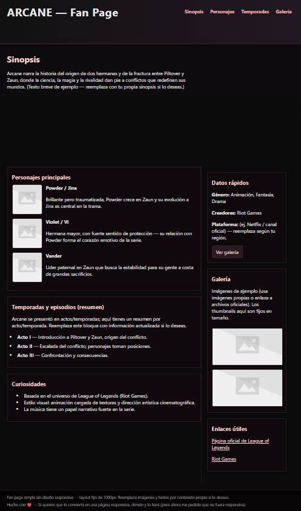
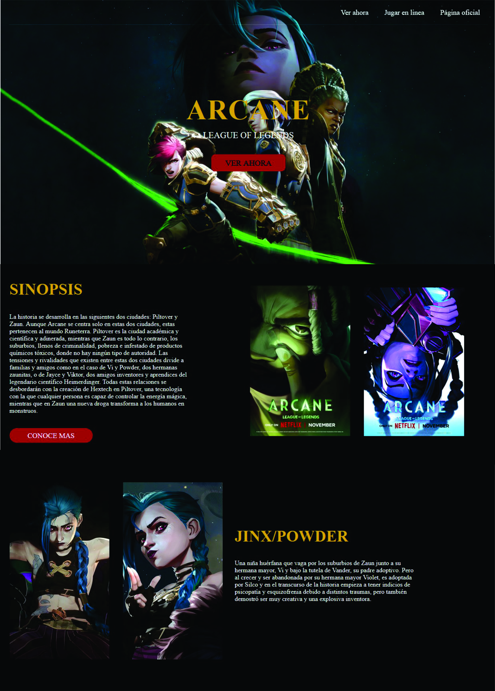
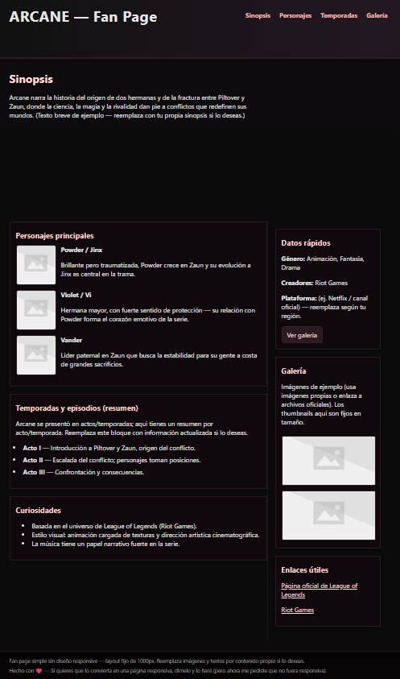
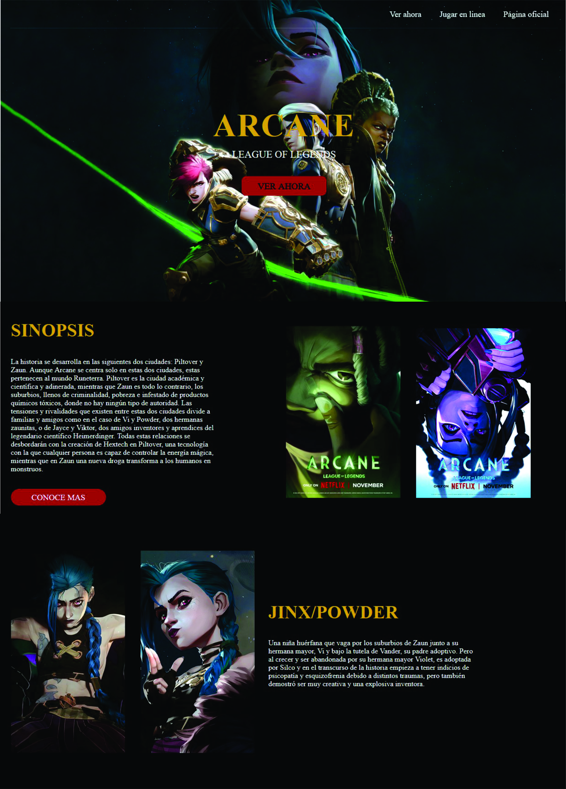
♦︎SEGUNDO PARCIAL♦︎
♦︎ COLORES ♦︎
Hexadecimales: Se usa para definir colores combinando el signo # con seis dígitos hexadecimales.
Keywords: Son palabras reservadas que se utilizan para definir propiedades y valores o para controlar el comportamiento y el diseño de los elementos.
RGB: Define un color mezclando intensidades de rojo, verde y azul, usando valores entre 0 y 255 o porcentajes del 0% al 100%.
RGBA: Se usa para definir un color con transpariencia, usando los valores de rojo, verde, azul (RGB) y un canal adicional de alfa.
HSL: Es una función para definir solores basada en un Tono, Saturación y Luminosidad.
HSLa: Define un color usando el modelo de Tono, Saturación, Luminosidad y Alfa. Permitiendo controlar la transpariencia de un color.
♦︎ CONFERENCIAS SOBRE LA IA ♦︎
ERROES Y ASPECTOS A MEJORAR:
- Mejor organizacion sobre el tema.
- Ser mas cuidadoso con el uso de las palabras.
- La IA como una herramienta y no como el reemplazo del proceso creativo.
- ¿Obligarnos a usar la IA, porque asi lo pide el trabajo?